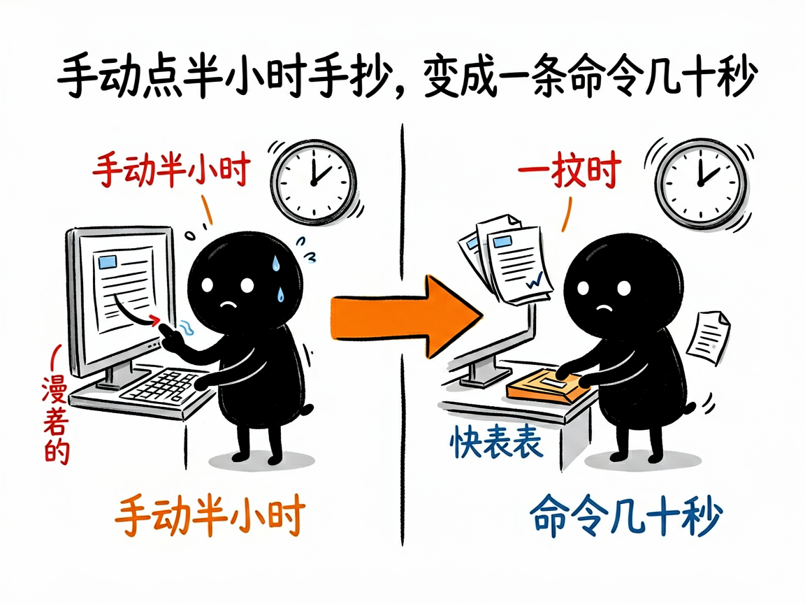
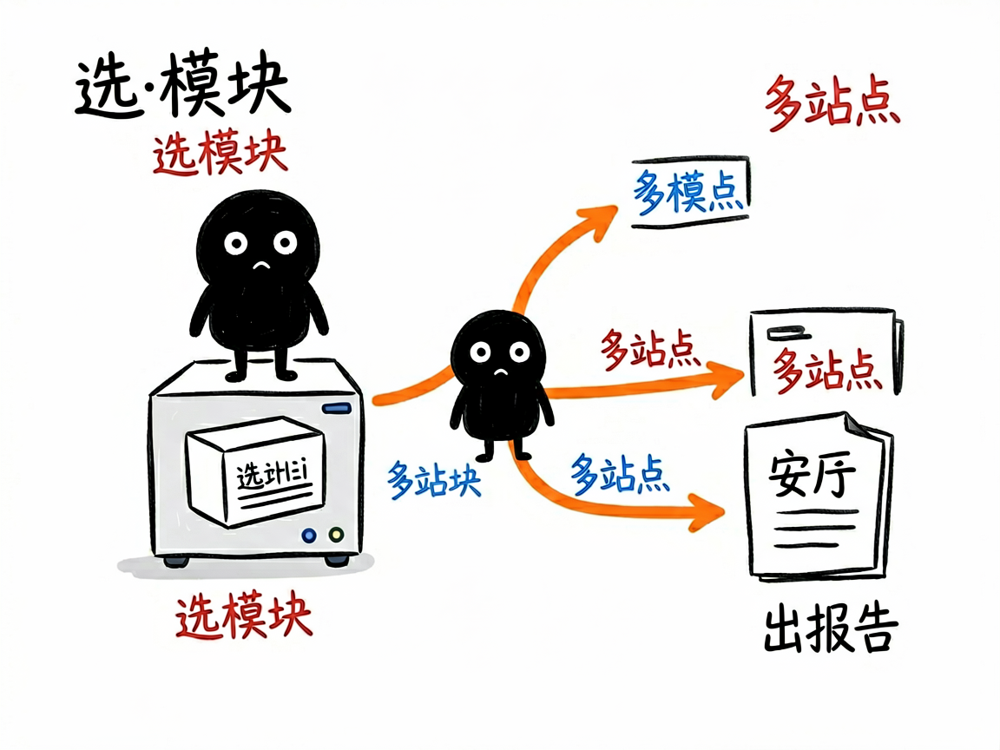

想挖亚马逊选品数据、查竞品，又嫌手动点太累？它一个入口全搞定 —— sellersprite-rpa 介绍
你在用卖家精灵（sellersprite.com）做亚马逊选品和分析，网站功能很全，但跨站点、跨模块手动点一遍要花半个多小时，还容易看花眼。sellersprite-rpa 把卖家精灵 5 个核心数据分析模块打包成一个入口：选产品、关键词选品、选市场、ABA 搜索频率、查竞品，让你一句话就能抓数据，再一句话出多站点对比报告，半个钟的活儿变成几十秒。
sellersprite-rpa 就是来解决这件事的。
你给它一个模块名加站点（比如"美国站、查竞品 yoga mat"），它还你一份 CSV 数据表，以及一份中文多站点对比报告。

它到底能做什么
- 选产品（products）：抓各站点、各类目下的热销 ASIN（商品编号），帮你找潜力款。
- 关键词选品（keywords）：抓各站点的关键词搜索量、点击量、PPC（广告出价）数据。
- 选市场（markets）：看细分市场的规模和集中度，判断类目值不值得进。
- ABA 数据选品（aba）：调出亚马逊 Brand Analytics 的关键词搜索频率排行（这是亚马逊官方品牌分析数据）。
- 查竞品（competitors）：按关键词、品牌、卖家或 ASIN 反查竞品是谁。
- 多站点对比：一次跑美国、日本、英国等多个站点，自动按站点拆成不同表格并合并。
- 自动出报告：把抓到的数据喂回去，生成中文 Markdown 分析报告。

怎么用
你不需要记任何命令。在 codex / workbuddy 等 agent 装好 sellersprite-rpa 技能后，直接对 AI 说话就行：
场景 1：想快速找美国站热销品 你：帮我抓一下美国站最近热销的产品 Top 100。 AI：它会打开卖家精灵、按站点抓下热销 ASIN，整理成表格，省去你手动点半小时。
场景 2：想按关键词查竞品 你：在美国站，搜"yoga mat"这个关键词，看看都是谁在卖、谁排前面。 AI：它会按关键词反查竞品，列出相关卖家和商品，帮你摸清对手。
场景 3：想出一份多站点对比报告 你：把美国、日本、英国三个站的选品数据都拉出来，做个对比报告。 AI：它会一次跑多个站点，自动按站点拆表并合并，最后给你一份中文多站点对比分析报告。
谁适合用
- 用卖家精灵做亚马逊选品、竞品调研的卖家和运营。
- 需要跨多站点批量拉数据、做对比分析的研究人员。
- 想把手工点击变成可复用流程、定期拉数据的团队。
一点说明
它不是双击即用的 App，而是给 AI 助手（如 codex / workbuddy）用的"技能包"。它靠浏览器自动化工具（RPA，让 AI 自动操作网页的工具）驱动你已登录卖家精灵的真实浏览器去抓数据，不用你配密钥。你先在 agent 里装好对应的浏览器自动化技能、登录卖家精灵就行。免费会员会有部分数据被遮蔽（比如某些排名只显示前 50），这是卖家精灵本身的限制，不是技能问题。具体支持的站点和字段以项目 SKILL.md / references 为准。